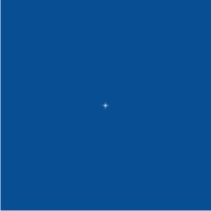

мерцающие звезды
rstar / 24.11.2011, 18:05/00:41
Форум:
подскажите как сделать мерцающие звездочки ?очень очень надо.буду благодарна за более раскрытую подсказку)))
з.ы:я новичок))
подскажите как сделать мерцающие звездочки ?очень очень надо.буду благодарна за более раскрытую подсказку)))
з.ы:я новичок))
Попробуйте создать в Corel PP простейшую анимацию.

Лёха, это наподобии:
— Мне негде жить!
— Попробуйте построить дом.
Расскажи подробней. Тем более тема в уроках.
Я б тоже с удовольствием посмотрел.
Хотя я представляю, как это сделать, но думаю твой способ необычней :)
sergey, ну ты сравнил со стройкой!
Честно говоря, нет желания написать урок на эту тему,
так как не вижу здесь ничего творческого.
Неужели сложно нарисовать звёздочку, затем сделать несколько кадров где звёздочка
поэтапно масштабируется?
А как использовать Corel PP для создания анимации, можно посмотреть хотя бы здесь:
http://corelvideo.ru/viewtopic.php?f=33&t=505